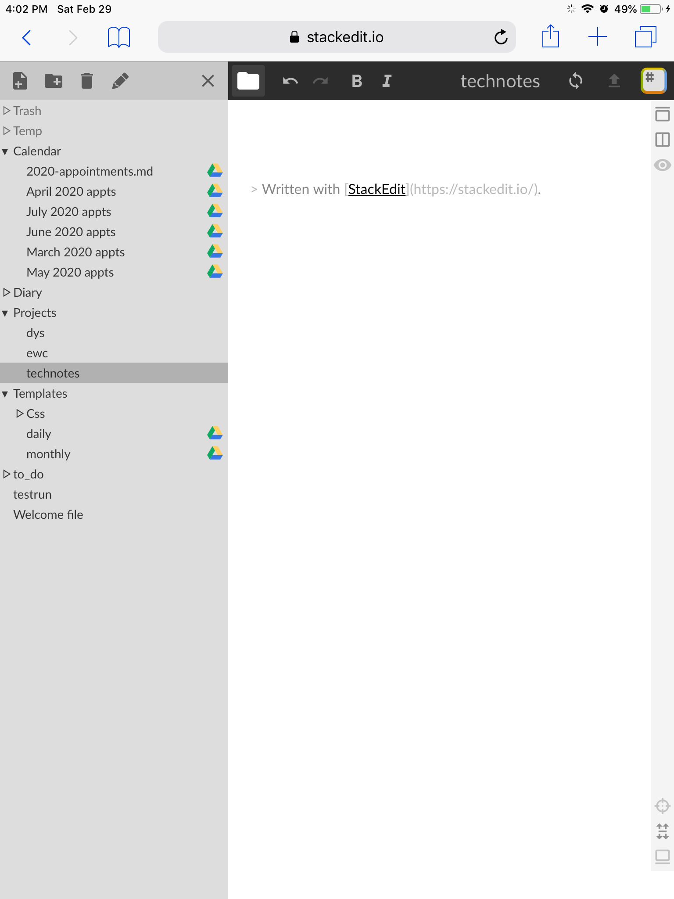

This is a work in progress, learning the planner, markdown and development. More to come soon!
I was looking for an online solution to planning and notetaking. I had some requirements:
- It had to be free.
- It had to be cross platform.
- It had to be accessible 24/7.
I have always been a big planner user. I have used paper and electronic of all kinds. I normally stick with paper because I like to write and doodle, but the past few years I have had trouble keeping up with them. I have tried all kinds of things to re-ignite my interest and its not working.
Recently I have been learning some basic web development, so I am spending more time on a computer than normal. Usually I do my business with an ipad, which isnt conducive to writing much.
So I decided to find an online tracker of some kind. The challenge was I am using an old windows laptop and want to sync with my ipad and imac.
It was hard to find what I was looking for, but finally I stumbled onto a solution and now I am sharing it here for other planner users.
Making a Cross Platform Planner Using Stackedit
Now we will build our planner, starting with the basics. Once you have it down it is pretty easy to expand it and tweak it to meet your needs.
- *A Google Account
- *Stackedit
What you need:
I already had a Google Account and I was using gmail, youtube, analytics, etc etc.
Simply go to Stackedit and you are ready to get started. Stackedit is entirely web based!
Once you are signed in to your Google Drive on stackedit...
2.

3.
Click on images to see larger
1. This is the main screen you will be working on. On the left hand side you enter your markdown, or just type. The right hand column displays your work. The nice thing about stackedit is that there is a menu above for formatting so you dont really need to use markdown. But as you use the menu it will insert the markdown, so you can learn it pretty quick.
2. In the upper right hand corner is the stackedit icon, click that to open your sychronization menu. In this menu you can link to your google drive and set up your preferences.
3. In the upper left hand corner is a file folder icon, click on that to open your file explorer. This is where you will set up your file system.